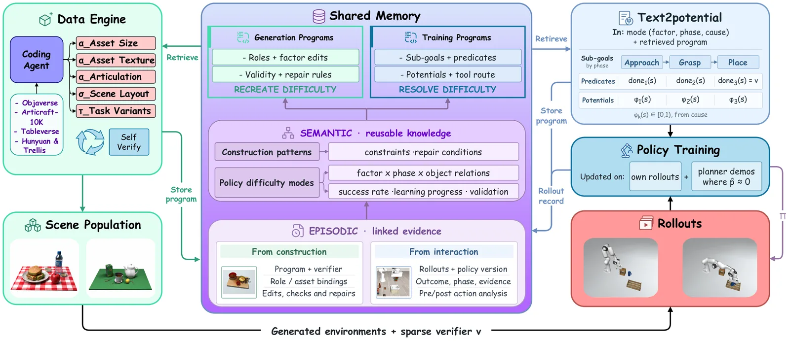
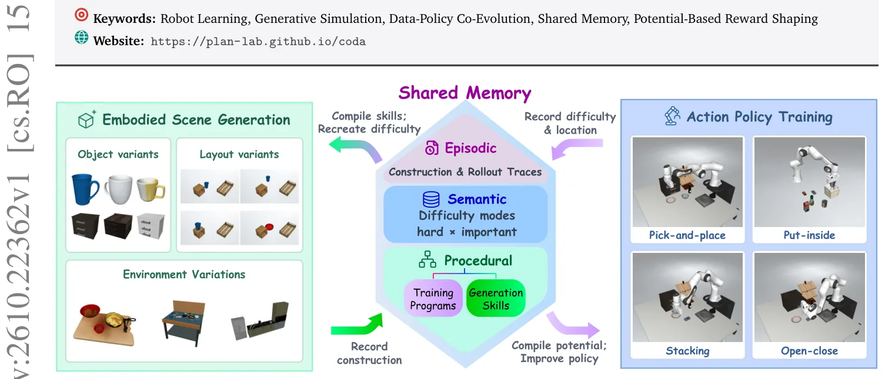
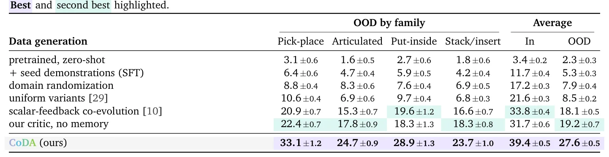
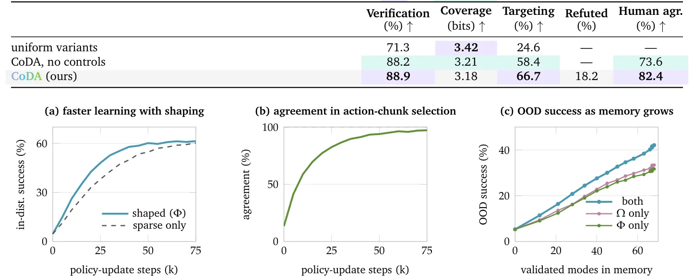

O problema da simulação generativa
Robôs manipuladores dependem de dados para aprender, e a simulação é a fonte principal. Construir ambientes simulados manualmente é caro e lento. Agentes gerativos podem automatizar isso, criando cenas e tarefas a partir de descrições de linguagem. No entanto, ambientes fisicamente válidos não são necessariamente úteis para treinar um robô. A simulação generativa remove a escassez de dados, mas introduz um novo gargalo: como decidir quais ambientes gerar e que tipo de supervisão usar para que a política aprenda de fato?
Engenharia de dados cega vs. feedback de aprendizado
Engines de dados existentes amostram variações de faixas pré-especificadas, refinam cenas até serem fisicamente válidas ou alocam orçamento baseado apenas na taxa de sucesso da política atual. Esses sinais indicam se um ambiente é válido ou se a política já o domina, mas não medem quanto a política melhora ao treiná-lo. Sem esse feedback, o gerador pode gastar seu orçamento em ambientes que a política já resolveu ou em problemas que ela não consegue aprender a superar. O CoDA fecha esse loop ao acoplar a geração de cenários ao aprendizado da política através de uma memória compartilhada.
A arquitetura CoDA e a memória heterogênea
O CoDA (Co-Evolution of Data Engines and Action Policies) é um framework onde um motor de dados e uma política de ação co-evoluem. O motor de dados, implementado como um agente de codificação, escreve programas executáveis de cena. Cada programa define um ambiente e um predicado de sucesso verificável. Uma política de ação coleta rolagens (rollouts) nesses ambientes. Um crítico de visão e linguagem analisa essas rolagens para diagnosticar falhas, identificando o fator responsável, a fase da trajetória e as evidências de apoio.

Da falha ao programa de correção
As falhas intrínsecas à execução motora são registradas separadamente das atribuídas a fatores da cena. A memória consolidada organiza essas evidências em modos de dificuldade reutilizáveis. Modos validados são compilados em dois outputs complementares: programas de geração que recriam as condições diagnosticadas e programas de treinamento que ajudam a política a superá-los. Ambos os programas são indexados pelo modo de dificuldade, permitindo reutilização entre tarefas. A representação compartilhada permite que o crítico identifique fatores que o motor pode modificar diretamente.
Text2potential: Supervisão densa a partir de linguagem
Em tarefas de manipulação longas, sinais de sucesso esparsos podem retardar o aprendizado de valor. Projetar recompensas densas manualmente é trabalhoso. O CoDA propõe o Text2potential, que compila um diagnóstico de falha em um potencial sobre o estado do simulador. Esse potencial densifica os alvos de valor para chunks de ação. As estimativas de valor resultantes guiam atualizações da política através de regressão ponderada nas próprias rolagens da política, favorecendo chunks de ação com valor estimado mais alto. Isso fornece supervisão densa enquanto preserva a política ótima da tarefa sob suposições padrão de shaping.
Ciclo de co-evolução e progresso de aprendizado
Cada rodada do ciclo usa a memória para guiar a geração de cenas, compila diagnósticos validados em programas de treinamento via Text2potential e atualiza a política. O progresso de aprendizado medido informa a geração subsequente. O sistema rastreia o progresso de aprendizado para modos de dificuldade recorrentes, decidindo quais dificuldades revisitar. Isso evita que o gerador se concentre apenas em ambientes já dominados ou em problemas intransponíveis, focando na zona de desenvolvimento proximal da política.

Configuração experimental
Os autores avaliaram o CoDA em quatro famílias de tarefas de manipulação e no LIBERO-Pro, usando o backbone de política π0.5. As comparações principais incluem o checkpoint lançado do π0.5, ajuste fino supervisionado em demonstrações semente, e políticas treinadas com randomização de domínio, variantes uniformes de ambiente ou geração guiada por taxa de sucesso. As baselines de geração usam o mesmo SDK e orçamentos. Métricas incluem taxas de sucesso fora da distribuição (OOD), qualidade da geração, precisão dos diagnósticos e custo computacional.
Resultados principais: Superação de baselines
O CoDA alcançou a maior taxa de sucesso OOD em todas as quatro famílias de tarefas. O sucesso OOD médio atingiu 27,6%, comparado a 18,1% para geração guiada por taxas de sucesso e 19,2% para o crítico sem memória. Essas melhorias de 9,5 e 8,4 pontos percentuais superam significativamente a geração uniforme (8,5%) e a randomização de domínio (7,9%). Retenção e reutilização de experiência através da memória produziram o desempenho mais forte. A tabela abaixo resume os resultados comparativos.

Dinâmica de aprendizado e escalabilidade
Estender o CoDA de cinco para quinze rodadas aumentou o sucesso OOD de 27,6% para 42,1%. Geração uniforme, randomização de domínio e geração guiada por sucesso yield ganhos adicionais muito menores. Nas rodadas posteriores, menos modos de dificuldade permanecem não resolvidos, e as melhorias diminuem. Remover a memória produz progresso menos consistente, incluindo quedas temporárias no sucesso. A figura abaixo mostra como o sucesso OOD cresce conforme a memória acumula experiência.

Generalização no LIBERO-Pro
No LIBERO-Pro, o treinamento com variantes de tarefa geradas pelo CoDA aumentou o sucesso de 25% para 84% sob perturbações de posição e de 1% para 76% sob perturbações de instrução. Isso demonstra uma capacidade robusta de generalização. Outros métodos, como OpenVLA e π0, mostraram sucesso próximo de zero nas mesmas perturbações. O CoDA com π0.5 em 15 rodadas alcançou 84% na generalização de posição e 76% na generalização de tarefa, superando significativamente abordagens anteriores.
Transferência de memória e reutilização
Os autores observaram que reutilizar a memória entre backbones de política transfere a experiência acumulada. Um segundo backbone pôde aumentar o sucesso OOD de 3,8% para 21,1% apenas reutilizando a memória gerada para o primeiro. Isso sugere que os modos de dificuldade e os programas de correção aprendidos são generalizáveis além da política específica que os gerou. A memória atua como um banco de conhecimento reutilizável sobre as dificuldades comuns da manipulação.
Limitações e escopo
O paper foca em tarefas de manipulação e não aborda outras modalidades robóticas. A qualidade dos diagnósticos depende do crítico de visão e linguagem, que pode falhar em cenários complexos ou ambíguos. O sistema assume que as falhas podem ser atribuídas a fatores de cena modificáveis, o que pode não cobrir todas as falhas de controle. Além disso, o custo computacional do ciclo de geração, simulação e diagnóstico de linguagem é significativo, embora o paper demonstre eficiência em relação ao ganho de performance. A ablação mostra que a memória persistente é crucial para o desempenho superior.
Conclusão
O CoDA apresenta uma abordagem para co-evolução de dados e políticas em robótica. Ao transformar diagnósticos de falhas em programas de geração e treinamento, e ao usar potenciais densos para supervisão, o framework melhora significativamente a generalização fora da distribuição. A memória compartilhada permite reutilização de conhecimento entre tarefas e políticas. Os resultados indicam que gerar ambientes que abordam falhas específicas da política é mais eficaz do que amostragem aleatória ou randomização cega. O trabalho abre caminho para sistemas robóticos que aprendem de forma mais autônoma e eficiente com simulação.
O que fica
- O CoDA usa uma memória compartilhada para transformar diagnósticos de falhas em programas de geração de cenários e treinamento da política.
- O módulo Text2potential converte falhas em potenciais densos, acelerando o aprendizado de valor sem alterar a política ótima.
- Em tarefas de manipulação, o CoDA elevou o sucesso fora da distribuição de 5,3% para 27,6%, superando baselines fechadas.
- A memória permite reutilizar dificuldades entre famílias de tarefas e backbones de política diferentes.
Paper original: CoDA: Co-Evolution of Data Engines and Action Policies
Comentários
Nenhum comentário ainda. Seja o primeiro.